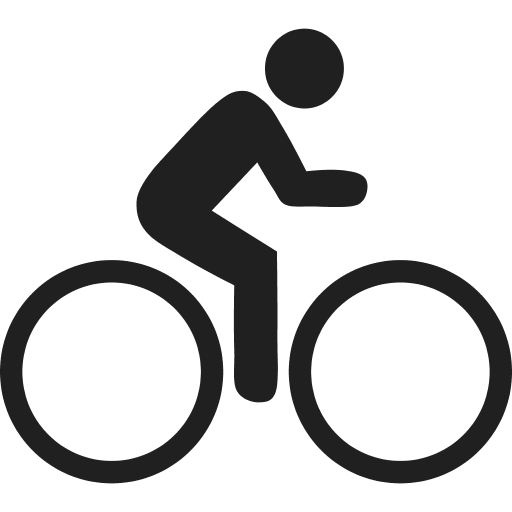
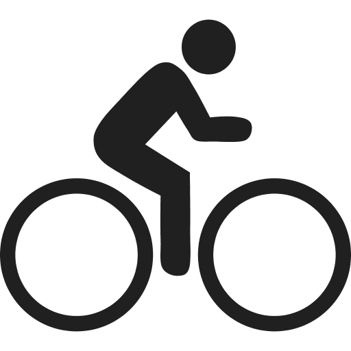
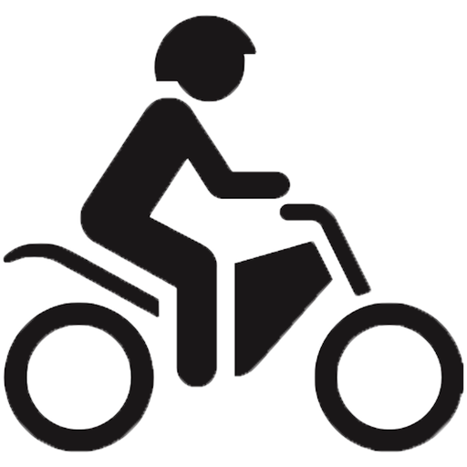
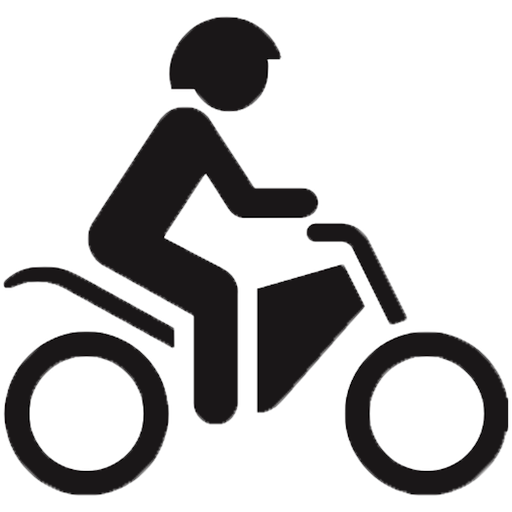

Rezultati

Za zeleno Zemljo
Tokrat si potoval minut
-
Prislužil si si točk
Vse skupaj si do zdaj nabral točk.
-
Prepotovana razdalja: kilometrov
Vse skupaj si prepotoval kilometrov. to je približno -kratna razdalja radija Zemlje.
 


 
